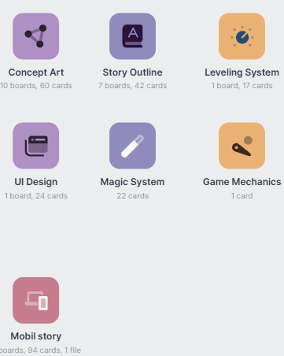

Background
Building an independent game studio together
Sirius Entertainment is a creative studio I am building with my sister. We work across game ideas, UX, visual design, gameplay and storytelling. Our browser game The Tiny Heist Crew is one public part of the work, while larger PC and mobile concepts continue to develop.